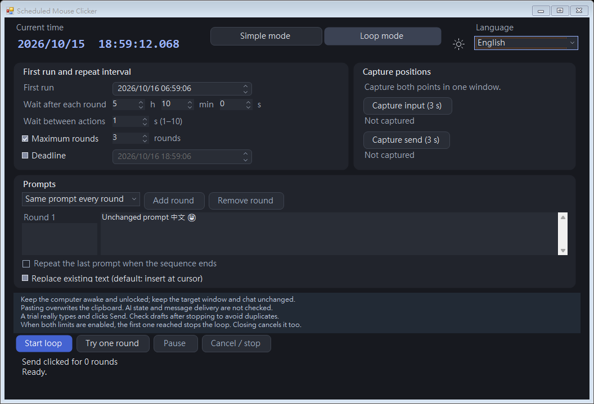
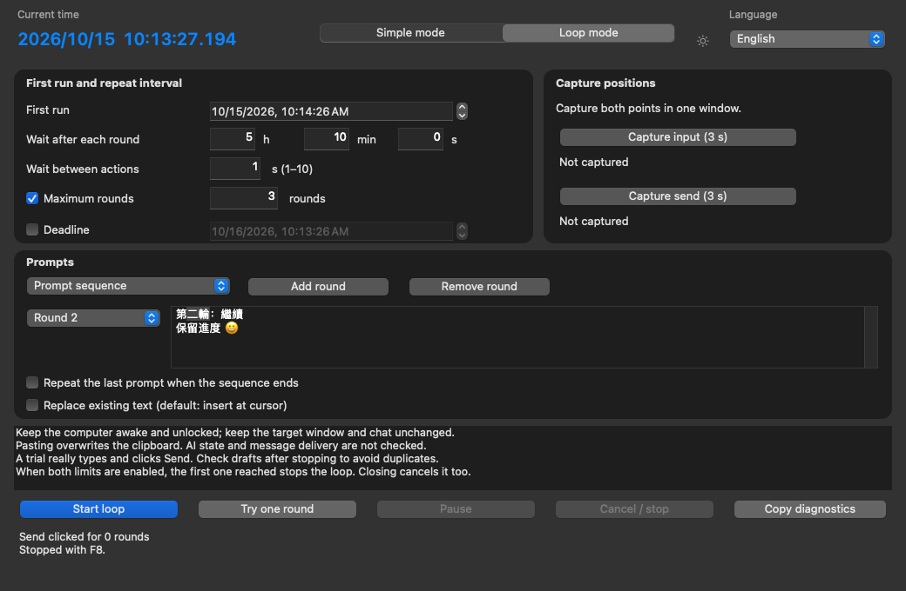

ScheduledClicker v1.2.0 is a free, local desktop tool for Windows 11 and macOS 13+. Schedule a mouse click or repeat prompt input and Send clicks, with five languages and light/dark appearance.
Simple mode schedules one single or double click at a future local time or after a delay. Loop mode pastes the same prompt or a sequence, clicks Send and repeats within configured limits. Both modes share a live clock, language picker and theme button.
Five languages, with manual switching
The app starts in Traditional Chinese for any Chinese system locale, including Simplified Chinese; Japanese, Korean and German select their matching language, and all others select English. Switch languages in either mode. This website offers the same five languages through the links at the top; each language has its own shareable pages.
Light and dark appearance
The app reads the system appearance when it opens. The sun/moon button switches both modes for the current session; restarting reads the system preference again.
Local operation and the clipboard
The app has no network access, account, ads or telemetry. Loop mode overwrites the system clipboard and does not restore its previous contents; text may remain in clipboard history or the target draft. Simple mode does not use the clipboard. Mac Copy diagnostics also replaces it when you press that button. Schedules and positions are not saved across restarts.

Windows loop mode in dark appearance. Interface render; not evidence of message delivery.

Mac loop mode in dark appearance. Interface render; the app supports five languages.
Common questions
Which file should I download?
Choose ScheduledClicker.exe for Windows or ScheduledClicker-macOS-universal.zip for Mac. Apple silicon and Intel use the same ZIP. The .sha256 files are text checksums, not apps. GitHub's Source code ZIP/TAR files contain source, not the ready-to-run app. Official release downloads do not require sign-in.
What can the two modes do?
Simple mode schedules one single or double click at a future local time or after a delay. Loop mode pastes the same prompt or a sequence, clicks Send and repeats within configured limits. Both modes share a live clock, language picker and theme button.
Does the app detect AI completion or reset usage limits?
Keep the computer awake and unlocked, with the target window, input and conversation unchanged. Fixed coordinates cannot identify a different conversation or moved field. A Send click does not prove delivery. The app does not inspect AI replies, bypass usage limits or detect reset times.
Need help opening or using the app?
Report a problem on GitHub Issues (a GitHub account is required to post). Include Windows/macOS version, app version/build, target app, reproduction steps and the full error. On Mac, Copy diagnostics can supply build and execution-stage details; inspect it before posting. Do not include prompts, private conversations or personal file paths in public reports. If you have no account, check the FAQ and existing issues first.